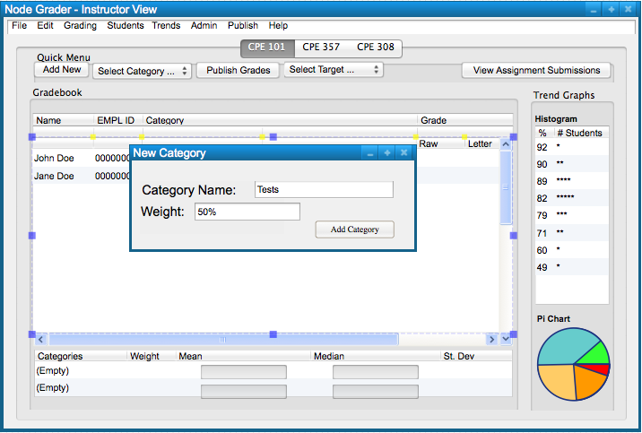
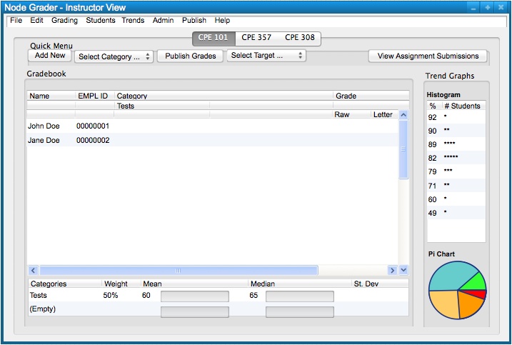

To create a new category, the user chooses the 'File' menu
command. A list of file options will appear and the user chooses 'Add'
to access another list of the items that can be added. The user chooses
'Category' from the list of items to add a new category; this will take
the form of the following, Figure 1.
Figure 1: Add Category path.
The commands in the 'File' submenu are the file functions - Save and Add. Saving a spreadsheet has no implemented response dialog. The Add submenu has the items that can be added - Class, Student, Category, and Assignment.
Figure 2 shows the response to the users selection of the 'File Add Category' command.

Figure 2: Add Category dialog.
The figure shows a dialog box for adding a new category. The dialog box only takes in a name in a text box, and an input box for the categories weight. It can be confirmed with the 'Add Category' button below. Confirming the category will create a new category in the spreadsheet.
When the user selects the 'Add Category' button, the system
inputs the newly created category in Figure 3.

Figure 3: Category Added view.